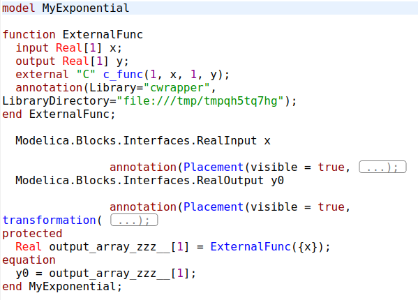
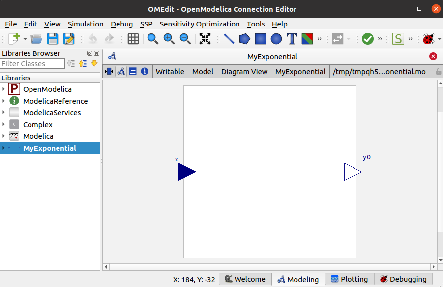
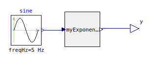

Note
Go to the end to download the full example code.
Export a function as Modelica model
otfmi.FunctionExporter enables to export OpenTURNS functions as Modelica model.
The main interest is to use OpenTURNS metamodels in a simulation environment.
Currently, the inclusion of a metamodel in OpenModelica GUI has been performed once (see this paper).
Model generation
First, we create the OpenTURNS function to export as Modelica model.
import openturns as ot
import otfmi
import tempfile
from os.path import join
func = ot.SymbolicFunction("x", "exp(x)")
inputPoint = [2.0]
print(func(inputPoint))
[7.38906]
We create the model constructor and the folder in which save the model:
fmuExporter = otfmi.FunctionExporter(func)
model_path = join(tempfile.mkdtemp(), "myExponential.mo")
print(model_path)
/tmp/tmpvgwdcey9/myExponential.mo
We create the FunctionExporter instance and export the exponential function.
We specify gui=True to use the model in a Modelica GUI in connection
with other components.
modelExporter = otfmi.FunctionExporter(func)
modelExporter.export_model(model_path, gui=True)
Simple as it looks, this function actually does the following:
write a C-wrapper for the OpenTURNS function,
write a Modelica model calling the C-wrapper as External function.
Model validation
We import this model in OpenModelica GUI. We can check the Modelica code:
{kind=link}
Note
The path to the C-wrapper is hard-coded in the model.
We can also check the connectors position:
{kind=link}
We connect the wrapper to an input sine signal (Modelica.Blocks.Sources.Sine) and to an output block (Modelica.Blocks.Interfaces.RealOutput):
{kind=link}
We simulate the model on 1 second, with 50 time steps. We can verify that y output corresponds to the exponential of the sine signal.

Warning
⚠️ Compared to native Modelica functions, the included OpenTURNS function is slow. In this case, 11 seconds of simulation were required for 50 time steps (i.e. 50 function calls).
Note that faster export modes are available with the “mode” keyword, depending on your setup.
Total running time of the script: (0 minutes 0.364 seconds)